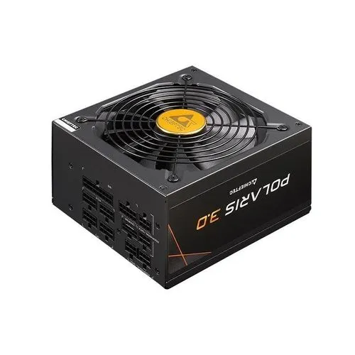

Le bloc d’alimentation est un composant essentiel de l’ordinateur. Il fournit l’énergie électrique nécessaire au fonctionnement de tous les autres composants, comme la carte mère, le processeur, la carte graphique et les périphériques internes.
Fonctions principales
- Fournir de l’électricité aux composants
- Transformer le courant électrique
- Protéger l’ordinateur contre les surtensions